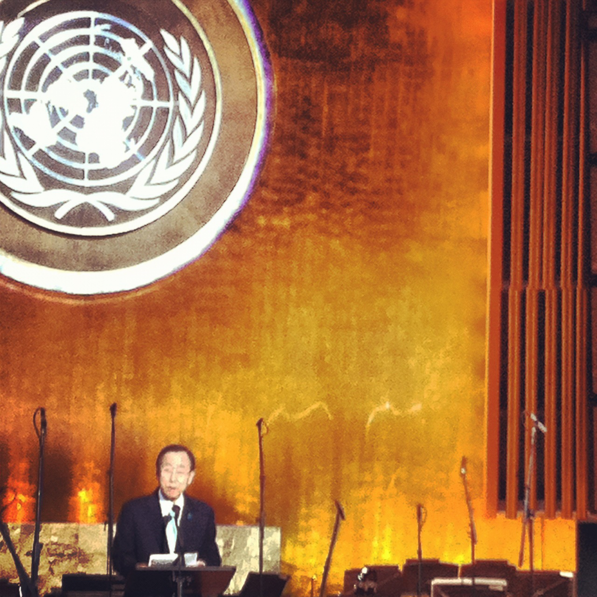

In 2012, I was able to fulfill a childhood dream when I was given the opportunity to work with the United Nations on a five-month internship. But rather than joining the peacekeeping force as I had always imagined, I was an energy adviser assigned to the UN Industrial Development Organization (UNIDO)'s mission to the General Assembly in New York. This opportunity was the perfect way to cap a six-year journey into sustainable development during my graduate studies.
While I was at UNIDO, one of our chief platforms was resource efficient industrialization. As a result, we were involved in a number of initiatives trying to promote clean and sustainable energy sources.
Namely, we were heavily involved with the UN's Sustainable Energy For All (SE4All) initiative that sought to work with a variety of public, private, and civilian stakeholders to collectively advance sustainable energy use. This allowed me to participate in a number of meetings, calls, and conferences that gathered key representatives from all sectors. Although my role was more observatory, it gave me a glimpse into the very heart of Public-Private Partnerships (PPPs).
My other major task was to observe negotiations behind the formation of the Outcome Document for the impending Rio+20 Conference on Sustainable Development, which was essentially interpreted as a global progress report on goals that had been established at the original conference in Rio in 1992. The formation of this outcome document represented a global consensus on the key development challenges of the time, and would eventually lay the groundwork for the 2015 Sustainable Development Goals (SDGs). With these goals established, countries and companies alike would have an increased mandate to invest, partner, and pursue necessary resources to addresses these issues.
Again, my role in these meetings was purely observatory. But it granted me invaluable access to high-level negotiations between the diplomatic corps of every nation in the UN. As can be expected with so many stakeholders, who all bring together a different set of resources, needs, and constraints, the negotiations were very long and drawn out. I began to appreciate the diplomatic process after hours would be spent debating the inclusion of specific words or prepositions. But I also understood that these meetings, even if largely symbolic at times, played a very particular role in global politics.
